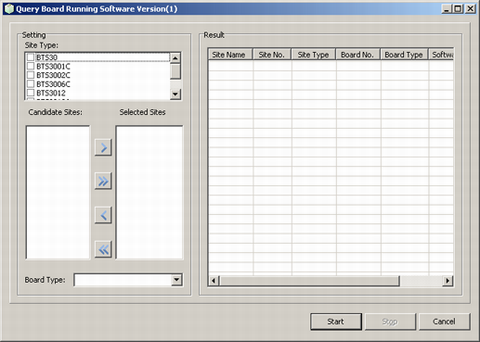
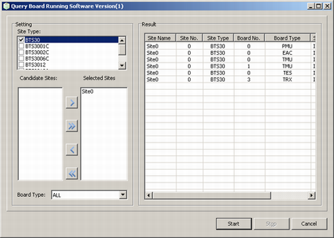

This describes how to query the type, software version, and clock status of a board. You can query the board running software versions of more than one BTS in one operation.
Prerequisites
- The LMT runs normally.
- The communication between the BSC and the BTS is normal.
Procedure
- Through GUI
- Choose . A dialog box is displayed, as shown in Figure 1.
Figure 1 Query Board Running Software Version window

- Set Site Type and select sites from the Candidate Sites box and add them to the Selected Sites box.
- Select the Board Type to be queried, and then click Start. The query results are displayed, as shown in Figure 2.
Figure 2 Querying the board running software version

- Click Stop. The query stops.
- Click Cancel.
- Through MML
- Run the DSP BTSBRD command on the Local Maintenance Terminal to query the version of the BTS board running software.
Copyright © Huawei Technologies Co., Ltd.